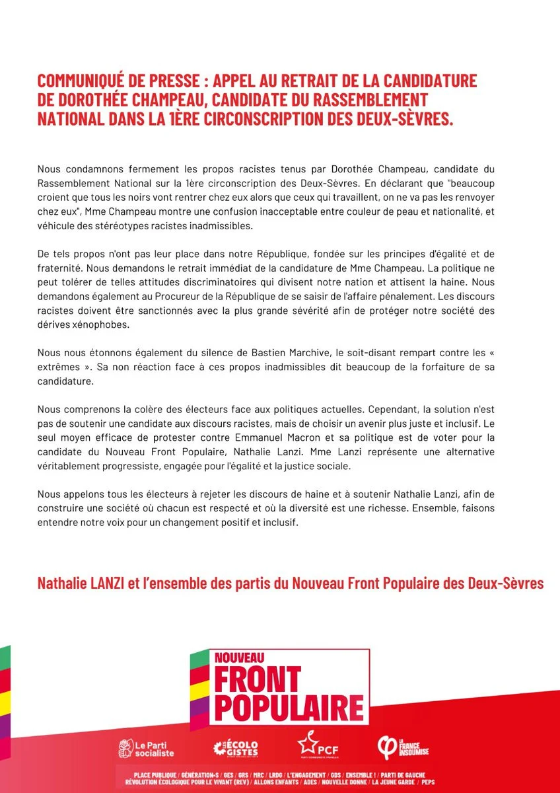

Publication sur X
Première circonscription. Un communiqué du Nouveau Front populaire
Date de publication sur X · 2 juillet 2024
Repères éditoriaux
L’image conserve un communiqué signé par Nathalie Lanzi et les partis du Nouveau Front populaire des Deux-Sèvres, qui demandaient le retrait de la candidature de Dorothée Champeau.
Texte de la publication sur X
https://t.co/aBtQKZCHPf

Sources
PCF 79 · @79Parti sur X · AR-0005-TW-1808198380117741823
À lire aussi · Sénatoriales 2026. Le PCF 79 présente Frédéric Giraud et Valérie Mazé
Publications associées
- Première circonscription. Nathalie Lanzi et les partis du NFP demandent le retrait de Dorothée Champeau · Même communiqué relayé sur Facebook